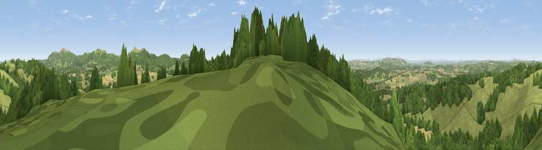

Viewpoint near Wellington Heath
#5726 in England · top 16% of its area beats it · near Wellington HeathWhere it is
The exact computed spot (SO 72175 40000). Click the marker for map links.
The view, rendered

A 360° render of this exact spot computed from the terrain model, tree cover and land cover — summer colours, afternoon light, calibrated against photographs of famous viewpoints. Real trees, hedges and buildings will differ in detail.
The panorama
Grey silhouette: terrain skyline in each direction (720 bearings, Earth curvature and refraction included). Dashed green: skyline with trees (+15 m) and buildings (+8 m) as obstacles. Blue strip: how far the ground is visible on each bearing.
Where the view opens
Wedge length = distance to the farthest visible ground on that bearing (vegetation-aware). Rings at 10, 25 and 50 km.
What fills the view
43% grassland · 42% woodland · 14% cropland ·
Angular shares of the visible panorama (visual magnitude), not map area. Landscape diversity 0.45 (0–1 Shannon).
Key numbers
More beautiful places nearby
The staircase of upgrades: each row has a higher view potential than everything closer. Driving times are estimates from straight-line distance, calibrated against real road routing — check an actual route before setting out.
| Place | Direction | Drive | Score |
|---|---|---|---|
| Viewpoint near Wellington Heath | S · 0 km | ~1 min | 72.6 |
| Viewpoint near Wellington Heath | SW · 1 km | ~3 min | 73.6 |
| Viewpoint near Coddington | N · 2 km | ~5 min | 76.4 |
| Herefordshire Beacon | E · 4 km | ~9 min | 85.8 |
| Millennium Hill | E · 4 km | ~9 min | 86.9 |
| Worcestershire Beacon | NE · 7 km | ~15 min | 87.1 |
| Viewpoint near West Quantoxhead | SSW · 114 km | ~139 min | 87.9 |
| Viewpoint near West Quantoxhead | SSW · 115 km | ~140 min | 88.7 |
52.05768, -2.40724 · source: screening · position refined by local search. Computed location — check access rights before visiting.